You own your training.
A training log, a project book and a coach's notebook for climbers. Quiet by design, private by default, and set in colours you choose.
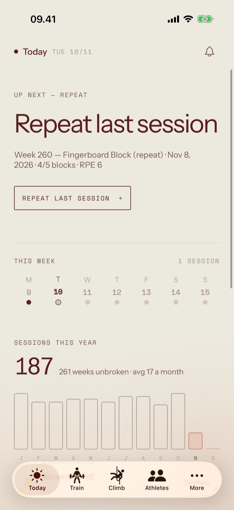
One calm screen for the day.
Today says where you stand and what comes next, then gets out of the way. Your career sits at the top in your theme; everything under it is a page of facts you can rearrange.
- Readiness & finger loadSignalsHow you feel, and how hard your fingers have worked this week.
- A dashboard you arrangeWidgetsAdd, remove and size the cards that matter to you.
- Your career, at a glanceHeroYears of sessions read as one shape, drawn in a single ink.
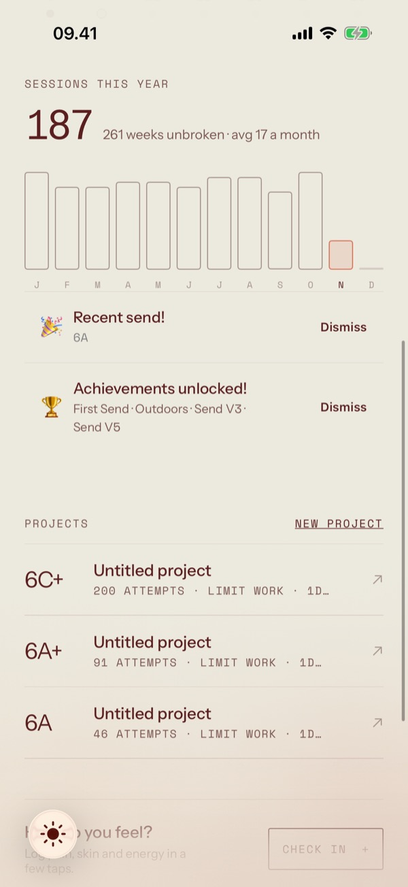
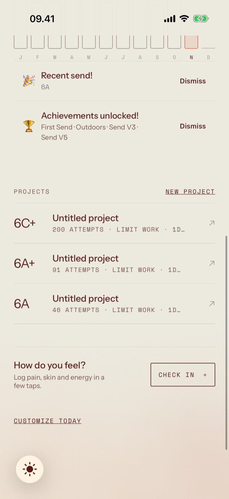
The plan is the builder.
There is no edit mode. Open a plan and it is already editable: tap a value to change it, long-press a block for everything else. Then start it, and a guided runner keeps time for you.
- Blocks, circuits & hang protocolsAuthoringSupersets and EMOMs are just circuits with a different rest.
- A runner you can read from the wallLiveTimers, audio cues and haptics, on the Lock Screen too.
- A log that remembersHistoryEvery session lands on its own page when you finish.
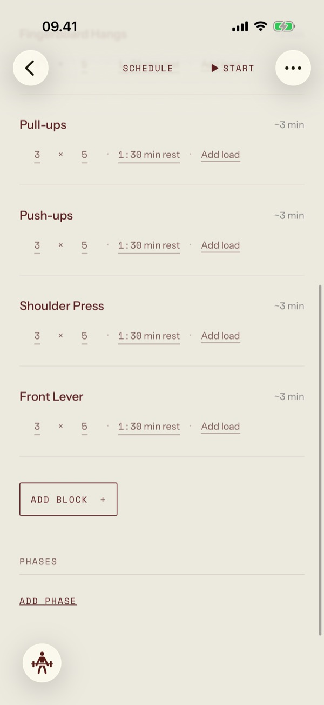
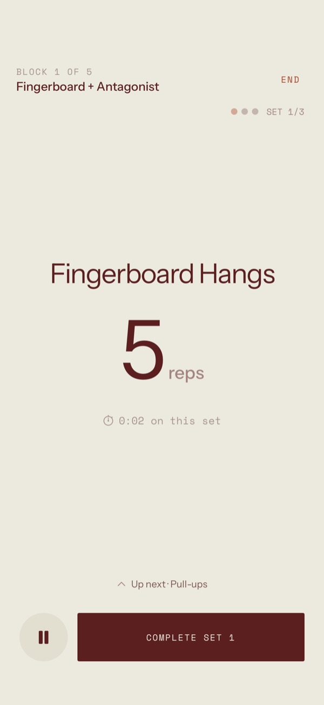
Measure what your fingers can hold.
Pair a force gauge and watch the pull live while you hang. Test once per grip and a finger-strength profile starts to fill in; no gauge, and a weighted-hang test does the job.
- Quick hangsProtocolsMax hangs, repeaters, density, min-edge, one-arm and block pulls.
- Finger-strength testWith a gaugeA max pull per grip, recorded as force.
- Strength testNo gaugeBodyweight plus added load, with the edge and grip you used.
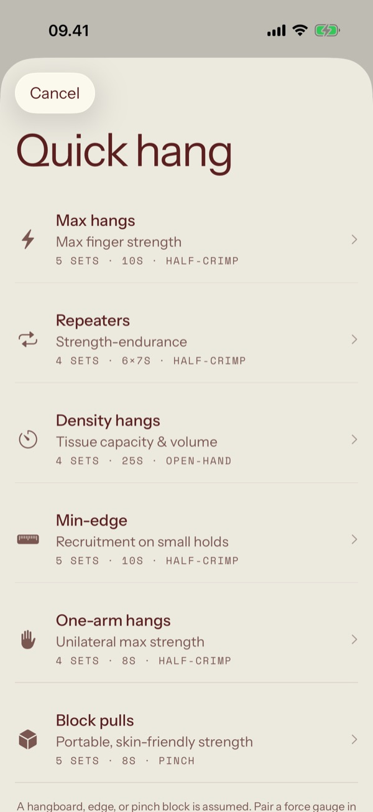
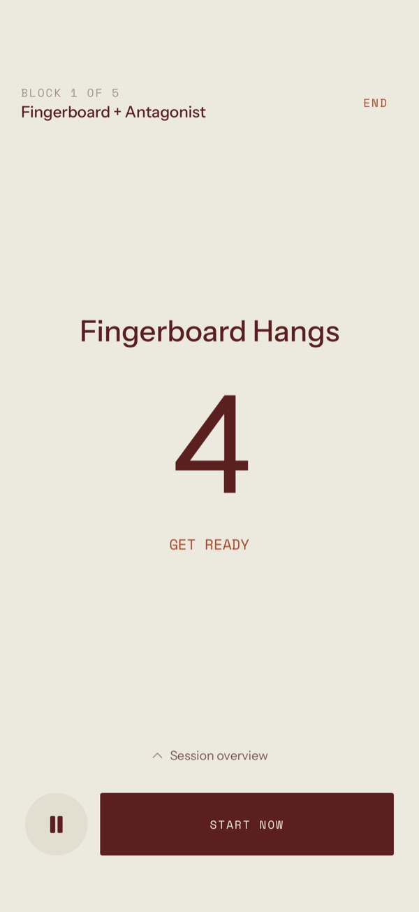
Every climb, every project.
Log a gym or crag session as you go, or one climb in three taps. Projects get their own page: the high point, the crux, how often you've been back, and the beta you worked out.
- Projects, under siegeProjectZones, falls and attempts become a high point and a crux.
- Conditions before you goOutdoorsSun on the wall, friction and whether the rock has dried, by day.
- TripsTravelPlan the training before, and keep the climbing in one place.
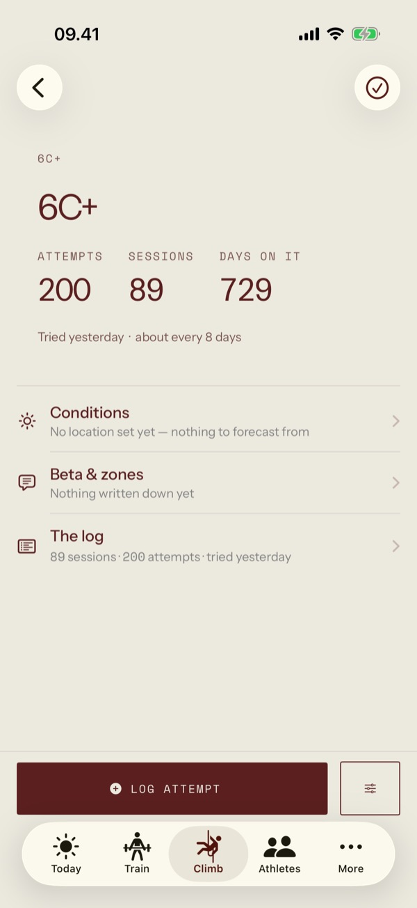
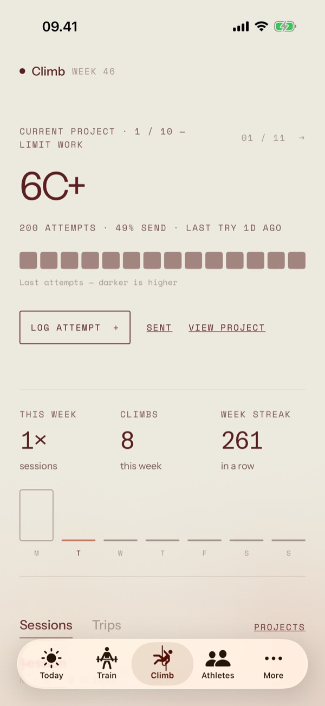
Listen before it hurts.
A daily check-in takes seconds: how you feel, and where it aches if it does. An ongoing issue keeps its updates together, so you can see a finger getting better instead of guessing.
- Daily check-insWellbeingPain, sleep and energy, or simply a pain-free day.
- Ongoing issuesTrackingOne page per injury, with every update in order.
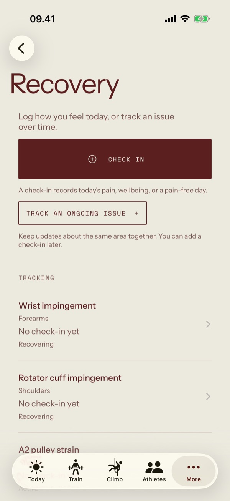
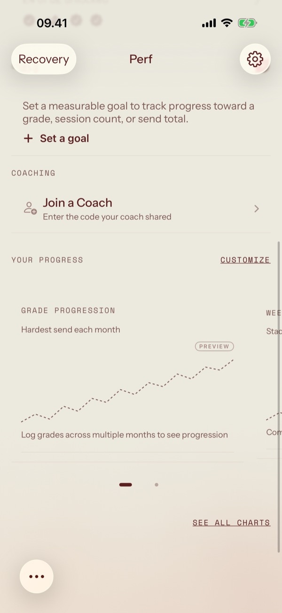
Coach from the same app.
Turn on coach mode and an Athletes tab appears. Assign a plan and the athlete gets their own copy, scheduled; their sessions come back to you with room for feedback.
- A rosterAthletesEveryone you coach, and how their week is going.
- Assign & schedulePlansTemplates from your library, sent as editable copies.
- FeedbackSessionsNotes on training and climbing sessions, when they've done them.
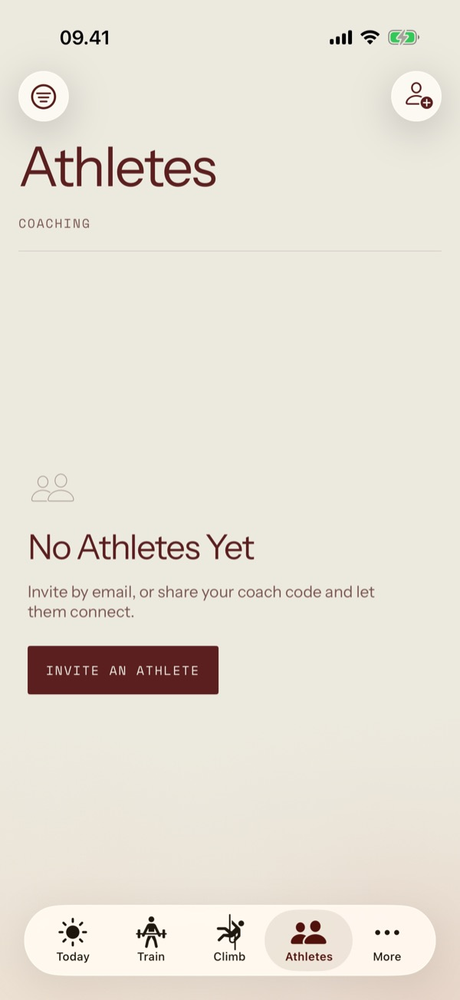
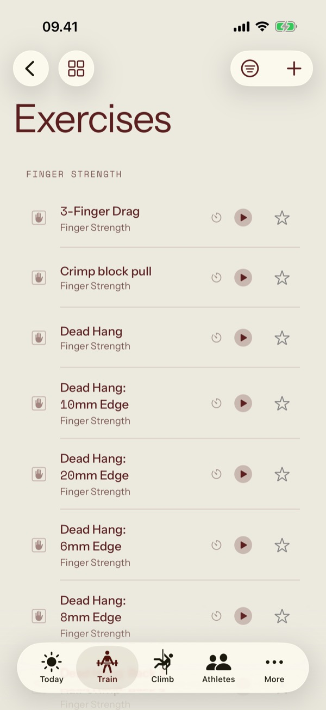
Four tones. Each light and dark.
The theme is the whole palette: its ink, its paper and one accent, used for one thing on each screen. Pick one here and this page changes with it.
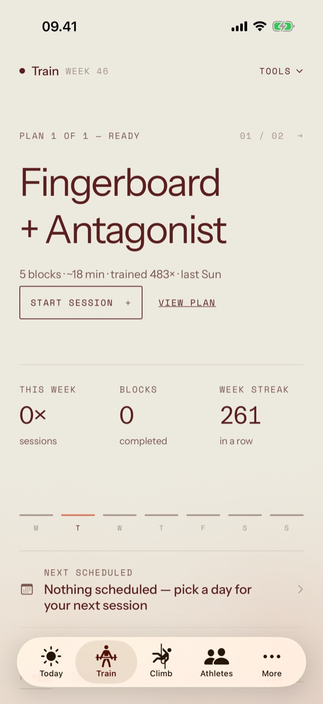
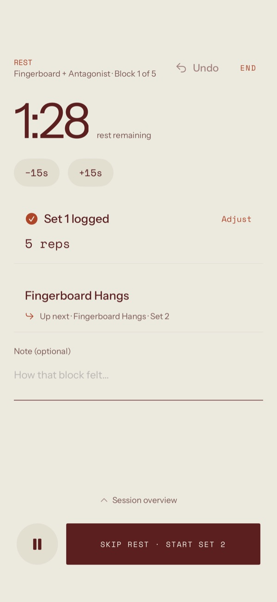
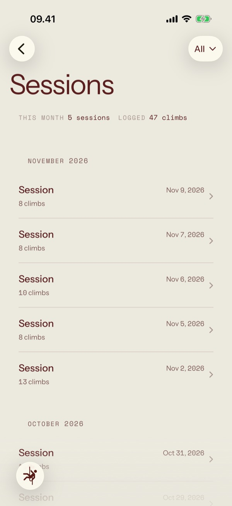
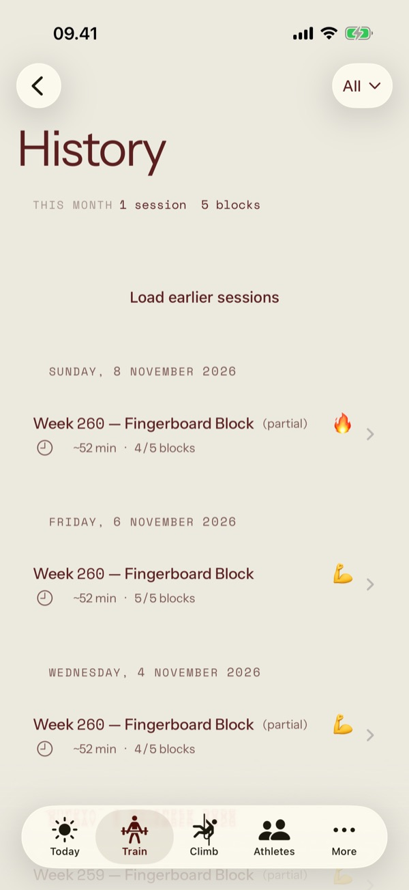
Your phone holds the truth.
Everything works offline, without an account. Sign in when you want a backup or a coach, not before.
Ink on paper.
Rules instead of cards, one accent per screen, and nothing that moves unless it means something.
Built for iPhone and iPad.
SwiftUI throughout, with Live Activities on the Lock Screen and Shortcuts for the things you repeat.